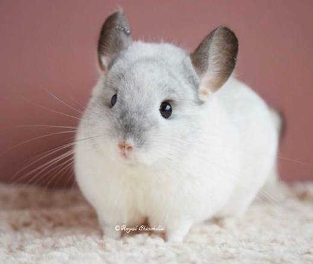

설치류
설치류 어류
어류 조류
조류 파충류
파충류 포유류
포유류친칠라
 사육조건 : 고산지대 바위 틈사이를 뛰어다닌 서식환경을 고려하면 사육 공간은 넓으면 넓을수록 좋다. 성체 두 마리 정도가 충분하게 생활할 수 있는 공간이 필요하며 공간을 이탈하지 못하게 천장까지 신경을 써야 한다. 또한 통풍을 고려하면 일정 부분은 메쉬 소재로 세팅하면 좋다. 설치류 특성상 갉아먹는 습성이 강하므로 플라스틱으로 된 케이지 보다 철제 또는 수제작 케이지가 안전하다. 일부 사육자들은 나무 케이지를 직접 만들기도 한다. 단 철제 케이지의 경우 바닥에 위치한 철심이 친칠라의 발볼록살을 다치게 할 수 있으므로, 평평한 바닥제를 대어 주는 것이 좋다. 사육 공간은 전선 및 전기 코드와 멀리 떨어져 위치해야 하고, 그러지 못할 경우에는 덮개 등으로 노출된 전기 설비를 가려야 한다. 서식환경을 고려하여 위로 올라갈 수 있으며 동시에 튀어오를 수 있는 공간을 확보해야 한다. 그렇지 않으면 정서적 불안정으로 우울증에 걸릴 수 있다. 능숙하게 나무를 타는 동물이 아니어서 추락하면 날렵하게 착지할 수 없으며, 골절을 당할 위험이 있으므로 케이지 안에 발판을 많이 설치해야 한다. 먹이사슬의 하위 종인 까닭에 케이지의 구멍이나 사다리에 발이 걸려 빠져 나오지 못하면 스트레스가 발현하므로 세팅에 주의해야 한다.음식 : 친칠라는 기본 식단인 건초와 전용 사료 급여에 충실해야 한다. 기본 식단은 탄수화물 25 ~ 35%, 단백질 15 ~ 20%, 섬유질 30 ~ 35% 를 주축으로 설탕 5% 이하, 지방 3% 이하로 구성되어 있으며, 알파파와 티모시 두 종류가 있다. 알파파 건초는 6개월 이하의 어린 친칠라나 임신한 친칠라에게 제공하고, 티모시 건초는 6개월 이상의 성체 친칠라에게 급여하는 것을 기본으로 삼지만, 일부 사육자들은 두 가지를 각각 50% 섞어서 성체에게 주기도 한다. 기본 건초와 함께 건초 큐브를 제공하는 것도 좋다. 고기, 과일, 아채, 견과류, 씨앗, 옥수수 등은 피하는 것이 좋다. 친칠라는 민감한 소화기관을 가지고 있는 까닭에 결과가 확인되지 않은 간식을 제공하면 심각한 건강문제를 야기할 수 있다. 탄수화물, 단백질 등 특정 영양소가 과도하게 높아도 소화계에 문제가 발생할 수 있으므로, 잔디 또는 귀리로 만든 건초를 간식으로 가끔 급여하는 것이 좋다. 전날 제공한 건초를 남기는 것은 배가 부른 것이 아니라, 신선한 먹이를 원하는 것이므로 새 먹이를 급여해야 한다. 물은 항상 마실 수 있도록 급수기를 설치하는 것이 유용하다. 급수기는 박테리아나 병원균이 번식하지 못하도록 자주 청소해야 한다. 치아가 계속 자라기 때문에 이갈이 장난감이 필요하다. 이를 간과하면 과도하게 자란 치아로 말미암아 통증과 질병을 유발하여 사망에 이르기도 한다. 이갈이 장난감으로 건조한 사과나무 가지나 나무 장난감을 제공한다. 일부 사육자는 은신처를 구매하기도 한다.
습성 : 굴이나 바위 틈에 서식하면서 주로 새벽이나 황혼 무렵에 활동하며, 식물의 잎, 과일, 씨앗 및 작은 곤충 등을 식량으로 삼는다. 최대 4,270 m 고도에서 무리를 이루고 산다. 때로는 집단 거주(colonies)에 가까운 사회 집단을 이루며 생활하기도 한다. 무리의 크기는 10여 마리에서 최대 100여 마리까지 다양하며, 여러가지 소리를 통해 사회적 상호 관계를 맺고 있다. 이를 통해 포식자의 위협으로부터 벗어나려는 것으로 추정된다. 대규모 무리를 구성하는 까닭에 이를 통제하기 위해서 적극적인 행동을 보이기도 한다. 암컷의 경우 영역 보호 본능이 매우 강하다. 애완용 친칠라가 집고양이 등에게 공격적인 행동을 하는 것도 이러한 습성에 기인한다.
주의사항 : 원래 건조하고 추운 곳에서 사는 동물이므로 온도와 습도 관리가 철저해야 한다. 친칠라는 조밀한 털 구조를 가지고 있는 까닭에 온도와 습도에 대한 적응이 느리고, 땀을 흘리지 않는 특성으로 말미암아 사람처럼 체온을 조절할 수 없다. 적정 온도는 15 ~ 24°C 이다. 24°C를 초과하면 스트레스가 과도해지며 열사병에 이르기도 한다. 10°C 이하에서는 호흡기 감염으로 인한 폐렴이 발생하여 사망에 이를 수 있다. 이상적인 온도는 15 ~ 16°C 이다. 습도는 40 ~ 60% 가 양호하다. 가습기를 설치하여 일정한 습도를 제공해야 하며, 그럼에도 불구하고 습도 유지가 어려울 경우에는 쿨패드가 유용하다. 넓은 사육공간 만큼 여러 곳에 쿨패드를 설치하는 것이 좋다. 고온다습한 한국의 여름 환경을 고려하면 기본적으로 상당한 냉방비가 소요된다. 이를 고려하지 않는 것은 매우 무책임한 태도이다. 체온이 과열되는 친칠라는 호흡이 가빠지고, 행동이 느려지며 무기력한 모습을 보이므로 세심하게 관찰해야 한다. 털이 촘촘하게 돋아난 까닭에 물을 흡수하면 건조가 어렵고, 피부병이 발생할 수 있다. 이러한 신체 특성상 야생 친칠라는 부석(浮石) 가루를 이용해 목욕을 즐긴다. 애완 친칠라는 이와 비슷한 성질을 가진 모래를 목욕에 이용한다. 대야 또는 전용 목욕통에 모래를 담아주면 뒹굴면서 털을 손질한다.[7] 목욕 일정은 1 주일에 1 ~ 2 회, 목욕 시간은 5 ~ 10 분이 적당하며 사용된 모래는 각질, 잔털 등으로 오염되었기 때문에 재사용해서는 안된다. 과도한 목욕은 피부를 건조시킬 수 있으므로 주의해야 한다.